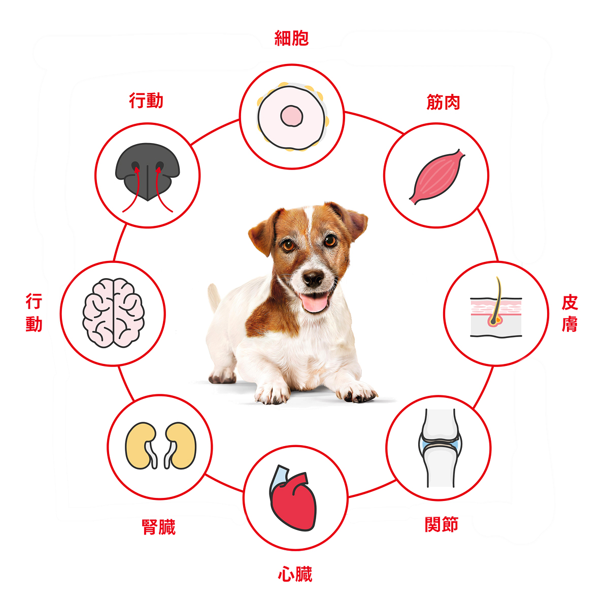
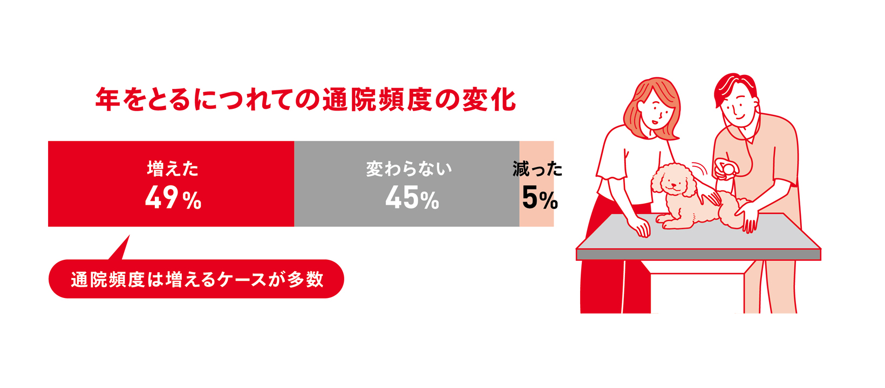

中高齢期からは、体にさまざまな
変化が現れ始めます。

中高齢期になるとただちに外観がシニアらしくなるわけではありませんが、身体の中では少しずつ目に見えない変化が進んでいきます。これからの愛犬の生活をサポートしていくための具体的な方法をお伝えします。
食事以外にも
できることがたくさん！
食事以外の毎日のケアの中でのちょっとした配慮は、中・高齢期の犬の健康や暮らしやすさにつながることがあります。どんなことができるのか、具体的にみていきましょう。
※食事で病気の予防や改善はできません。健康について気になることがあればかかりつけの獣医師に相談してください。
たとえ異常がみられなくても、
年に2回の定期的な
健康診断を推奨します。
犬の１年＝人間の４年。愛犬にとっての年１回の健康診断は、４年に１回しか健康診断を受けていないことになります。愛犬の日常の変化に早く気づくために、年２回の定期的な健康診断をお勧めします。

キャンペーン期間
10月1日(水) - 11月30日(日)
なぜ健康診断が大切なの？
愛犬が年を重ねると通院頻度は増えるものです。実際に約50%のペットオーナーが「病院に行く頻度が増えた」と回答しています。

愛犬の普段の様子を知ってもらうことが病気の早期発見に役立ちます。また、シニア期は病気のケアや介護が必要になることも。そのようなときに家族だけで抱え込まないよう、相談できる関係を早めに築いておくと安心です。(※本ページの調査：ロイヤルカナン調べ2025年)
年齢に合った8歳以上の犬用
フードを試してみたい方へ
フードを試してみたい方へ

期間限定500円OFFクーポン配布中!!


※クーポンの利用条件は各ECサイトのクーポンページにてご確認ください。